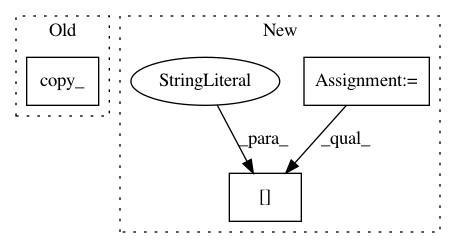

fee1cb87887377033b4db0b6c1b6381c76c15353,gpytorch/utils/toeplitz.py,,toeplitz_mm,#Any#Any#Any#,104
Before Change
orig_size = len(toeplitz_column)
r_reverse = utils.reverse(toeplitz_row[1:])
toeplitz_column.resize_(orig_size + len(r_reverse))
toeplitz_column[orig_size:].copy_(r_reverse)
matrix.resize_(2 * orig_size - 1, num_rhs)
matrix[orig_size:, :].fill_(0)
After Change
orig_size = len(toeplitz_column)
r_reverse = utils.reverse(toeplitz_row[1:])
c_r_rev = torch.zeros(orig_size + len(r_reverse))
c_r_rev[:orig_size] = toeplitz_column
c_r_rev[orig_size:] = r_reverse
temp_matrix = torch.zeros(2 * orig_size - 1, num_rhs)
In pattern: SUPERPATTERN
Frequency: 4
Non-data size: 3
Instances
Project Name: cornellius-gp/gpytorch
Commit Name: fee1cb87887377033b4db0b6c1b6381c76c15353
Time: 2017-08-10
Author: jrg365@cornell.edu
File Name: gpytorch/utils/toeplitz.py
Class Name:
Method Name: toeplitz_mm
Project Name: pytorch/fairseq
Commit Name: 03a57decde62c76783ef7e2288bd61bc87f6e266
Time: 2018-12-24
Author: myleott@fb.com
File Name: fairseq/optim/fp16_optimizer.py
Class Name: FP16Optimizer
Method Name: step
Project Name: cornellius-gp/gpytorch
Commit Name: fee1cb87887377033b4db0b6c1b6381c76c15353
Time: 2017-08-10
Author: jrg365@cornell.edu
File Name: gpytorch/utils/toeplitz.py
Class Name:
Method Name: toeplitz_mv